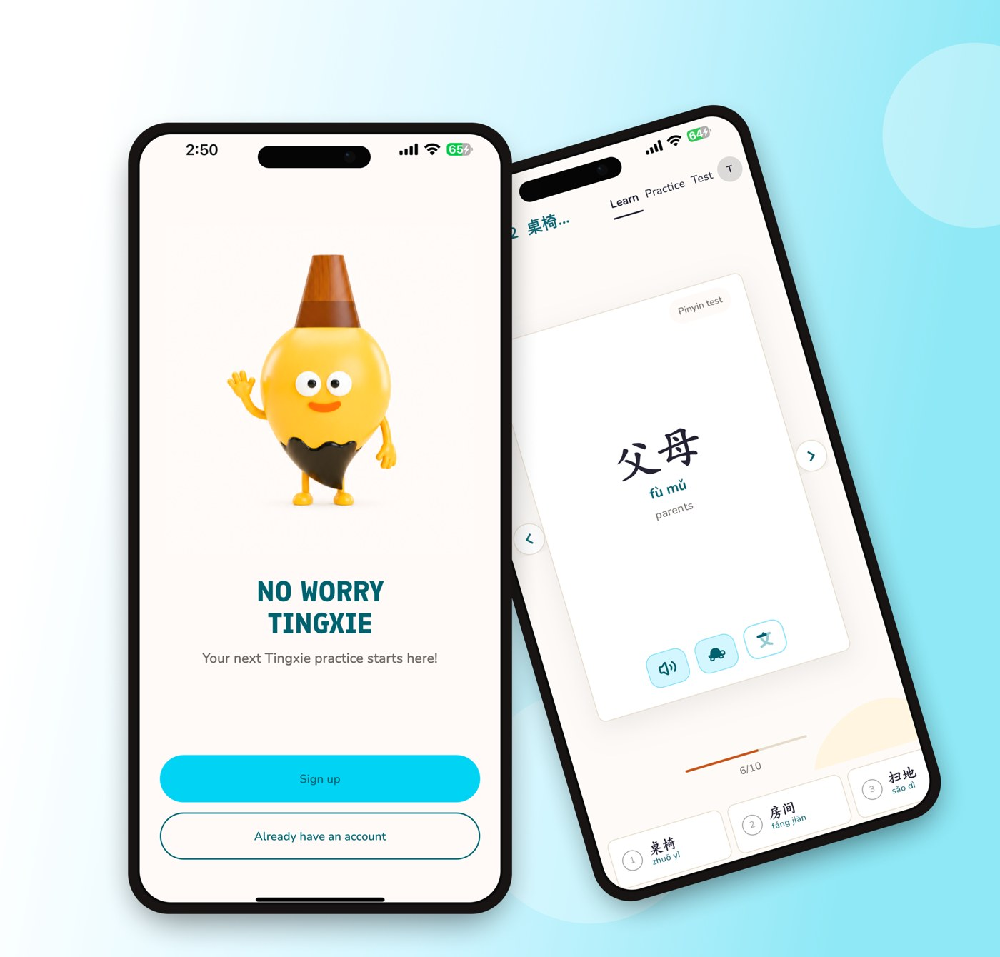

iOS · Web · AI · 2026
No Worry Tingxie
A Chinese vocabulary learning tool for Chinese learners — starting with Singapore primary students and their parents. 71 families on iOS and web, 75% month-one retention, no marketing.

No Worry Tingxie on iOS · welcome screen and a Learn card
Problem
Surprisingly, even Chinese-Singaporean parents struggle to support their children's Chinese. Most are working parents with little time, unsure their own Chinese is right — so many hand it to tuition centres.
My role
Founder. User research, product strategy, design system, design and build for iOS and web.
Key decisions
Narrowed a broad AI reading app to one recurring school ritual. Went native so children can learn, test and revise on their own.
Outcome
71 families, 75% month-one retention with no marketing. iOS live since September; roadmap through Q2 2027.